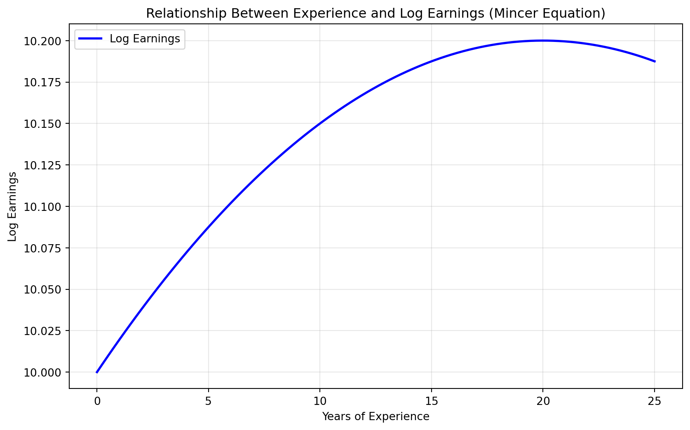
6 Human Capital
6.1 Human Capital
So far in this book we have generally considered workers skills as fixed. But individuals invest a lot into their skills. We call the accumulation of an individual’s skills their human capital.
Human capital has always played a key role in Economics. One of the earliest discussions comes from Adam Smith, who recognized that investments in education, training, and health improve worker productivity. Modern growth theory also emphasizes the importance of human capital in explaining differences in income across countries. Below we consider data that was made available by Gapminder, an organization that collects data from around the world to make cross-country comparisons.
In Figure 6.1 we plot on the vertical axis the GDP per capita of a country. This is a common measure of the average wealth of a country. A higher GDP per capita implies the country produces more (in dollar terms) per person relative a lower GDP per capita country. Note that this scale is on the logarithmic scale. That is, each tick mark is double the previous tick mark. On the horizontal axis we plot the mean years of schooling for men 25 years and older. Figure 6.2 plots the same variables, but for women 25 years and older. The size of the bubble indicates the population of the country. The color indicates the region with blue indicating Africa, red indicating Asia, yellow indicating Europe, and green indicating the Americas.
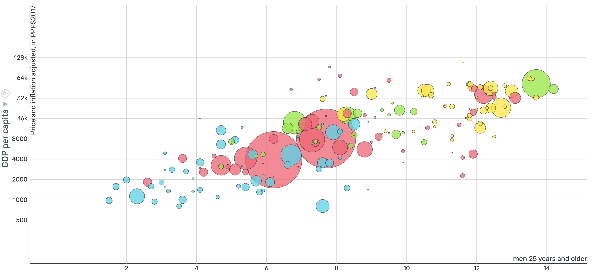
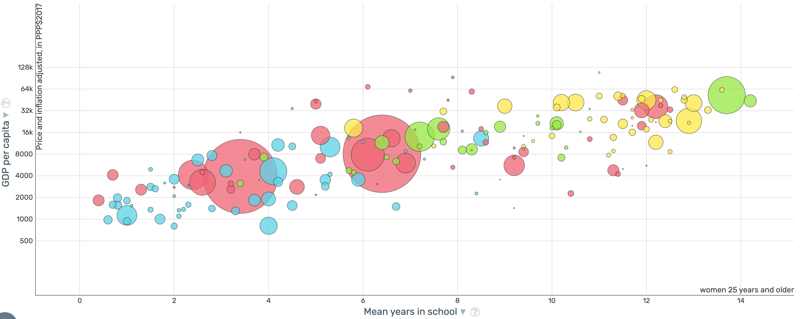
The patterns in both of these figures is clear. Places with higher levels of schooling tend to have higher GDP per Capita. Of course we can’t explain all of the variation with schooling alone, but the patterns are striking.
Schooling is often conceptualized as the primary way to increase the human capital of a citizenry. Since it is so tightly linked to growth across countries, it has been a key focus of economic policy for centuries. The importance of human capital has been understood for a very long time in Economic theory. For example, Alfred Marshall in his seminal work Principles of Economics, states “The most valuable of all capital is that invested in human beings.”
What the Gapminder data allows us to do is show that countries that invest in education tend to be wealthier. What we can also ask is: “within a country, do individuals that invest more in education earn more as well?”
Gary Becker in his 1964 book Human Capital outlined the individual investment decision. He conceptualized human capital in the same way previous work had conceptualized investment in physical capital (i.e. better machines and technology.) The overall structure of the problem is actually relatively simple.
The investment decision for human capital is similar to other investment decisions. To be concrete, let’s consider the decision to attend college or not. What does the decision depend on? Well, it depends first on how much you think this will increase your income in future periods. Let \(Y_t^1\) be the income you would earn in period \(t\) if you attend college. Let \(Y_t^0\) be the income you would earn in period \(t\) if you don’t attend college. For example, let’s start time at age 18 so \(t=0\) when a person is 18 years old. If the person is in college, then they are likely paying some amount for tuition and living expenses, and earning little current income. If they are not in college, they don’t need to pay tuition and may be able to earn more by working in a full-time job. So initially, \(Y_1^1 < Y_0^1\).
Of course we don’t expect this to always be the case. Let’s move forward 10 years, after you have graduated college. We will assume that college has given you training and opened doors that would have otherwise remained shut. So we expect \(Y_{10}^1 > Y_{10}^0\). So how do we decide whether to invest in college or not? In one scenario, you start with lower amounts of income, but eventually gain more income in later periods. Becker suggests analyzing this decision in the same way as firms analyze investment decisions. This is done by computing the net present value of the investment.
The net present value (NPV) of the education decision can be calculated as:
\[NPV = \sum_{t=0}^{T} \frac{Y_t^1 - Y_t^0}{(1+r)^t}\]
where:
- \(Y_t^1\) = income in period \(t\) with college education
- \(Y_t^0\) = income in period \(t\) without college education
- \(r\) = discount rate (interest rate)
If \(NPV > 0\), then the investment in education is worthwhile from a financial perspective. This is the exact same formulation as a firm would make in deciding whether to buy a new machine or not.
Now, why is the discount rate in the equation? The idea is that income today is more valuable than income tomorrow. Why? Because if you have income today, then you can invest it and get a rate of return equal to r. For example, if you have 100 dollars today, the interest rate is 5 percent, then you will have 105 dollars tomorrow. Therefore, having 100 dollars today is equivalent to having 105 dollars in a year from now.
To put it another way, say in a year from now, I have 250 dollars. How much money would I need to have today so that I can ensure that I have 250 dollars in a year? Well, this depends on the interest rate. If the interest rate is 5 percent, then if I have \(\frac{250}{1.05} \approx 238\), I could put that money in the bank, collect my interest, and have 250 a year from now.
To see clearly how this equation works, let’s take a more standard example of a physical investment. Imagine you are considering buying a machine for your factory. If you buy the machine, you expect your profits will be zero in the current year (because you need to pay for the machine which is expensive), but then for the next two years you expect your profits to be 100 dollars per year. If you don’t buy the machine, you can continue business as usual. You expect to earn 20 dollars for the next three years. To keep this simple, let’s assume we are only considering the next three years, after which you plan to shut down the business.
The question is, what is more valuable, an income stream of (0, 100, 100) or an income stream of (20, 20, 20). To answer this, we need to know the interest rate. Let’s assume the interest rate is 10 percent. To compute the NPV of buying the machine, we calculate the sum total of the discounted income streams:
For buying the machine, I receive zero today, 100 a year from now, and 100 two years from now. The value of a 100 dollars is equivalent to \(\frac{100}{1.1} \approx 90.91\) today. Why? Because if I had 90.91 today and invested it at 10 percent, in a year I would have 100 dollars. The value of 100 dollars two years from now is equivalent to \(\frac{100}{1.1^2} \approx 82.64\) today. Again, if I had 82.64 today and invested it at 10 percent, in one year I would have 90.91. If I invest that again at 10 percent, in two years I would have 100 dollars. Therefore, the total NPV of buying the machine is: \[NPV_{buy} = \frac{0}{1.1^0} + \frac{100}{1.1^1} + \frac{100}{1.1^2} \approx 0 + 90.91 + 82.64 = 173.55\]
Now we can do the exact same thing for the other income stream. If I don’t buy the machine, I receive 20 dollars today, 20 dollars a year from now, and 20 dollars two years from now. The NPV of this income stream is: \[NPV_{no\_buy} = \frac{20}{1.1^0} + \frac{20}{1.1^1} + \frac{20}{1.1^2} \approx 20 + 18.18 + 16.53 = 54.71\]
So clearly in this case it is more valuable to buy the machine. Now, instead of conceptualizing this decision as buying a machine, Becker conceptualizes this as investing in human capital. The same logic applies. You give up some income today (paying tuition and not working full-time) in exchange for higher income in the future. If the NPV of investing in education is greater than the NPV of not investing, then it is worthwhile to invest in education.
For our purposes, we are going to focus much more on the term \(Y_t^1-Y_t^0\) in Becker’s theory, rather than studying how choices vary by discount rates. For much of the discussion, we won’t actually need to keep track of the time period. Of course the impact of education on your earnings may vary over the career. For now let’s just consider the average across all periods as: \(Y^1-Y^0\). In other words, we will think about \(Y^1-Y^0\) as the average increase in income from attending college.
An enormous literature in labor economics has sought to estimate \(Y^1-Y^0\). It is notoriously difficult as we will discuss in the next section. The key issue is that what we are conceptualizing is a world in which you go to college vs. a world in which you don’t. But for any individual, they can only do one of those two things. So when we think about the data, we will need to compare across people who go to college vs. people who do not.
But that again raises the fundamental issue of identification: what if people who attend college are different than people who do not attend college in unobservable ways? Then, how can we be sure education is driving income differences?
Lastly, this framework does not leave a lot of room for different types of education. If you get certain degrees you may get different future income streams. We will also consider returns to different college majors to see if the type of education makes a difference.
6.2 Mincer Equation
One of the most famous uses of Gary Becker’s theory on human capital investment is the Mincer Equation, derived by Jacob Mincer. The goal of the Mincer Equation is to try and model the earnings of workers using a relatively simple list of variables which are inspired by Gary Becker’s theoretical formulation (which in practice is much more involved than what was presented in the previous section). The Mincer Equation is presented below:
\[\ln(w) = \alpha + \beta_1 S + \beta_2 E + \beta_3 E^2 + \varepsilon\]
Where:
- \(w\) = earnings (wage or income)
- \(S\) = years of schooling/education
- \(E\) = years of work experience (often approximated as age - schooling - 6)
- \(\alpha\) = intercept term
- \(\beta_1\) = return to education (approximately the percent increase in earnings per additional year of schooling)
- \(\beta_2, \beta_3\) = parameters capturing the relationship between experience and earnings
- \(\varepsilon\) = error term
This is probably one of the most famous and analyzed equations in all of labor economics. Our main focus will be in understanding the parameter \(\beta_1\), which is the return to an additional year of schooling. This has been a parameter that researchers have long been interested in. Before we address this parameter, let’s first understand the other parameters.
The Mincer Equation has two main variables that are used to explain wages: schooling and experience. Both of these reflect investments in human capital. The basic idea is that the more schooling and individual has, the higher their productivity will be, yielding higher earnings. However, individuals also accumulate human capital through work experience.
Work experience is often modeled as a quadratic. The basic idea is that initially, you learn a lot in your new job. These new schools will allow you to be more productive and earn more. But we don’t think this return to experience continues forever. Eventually, you stop accumulating new skills on your job and so the return to experience starts to decline. Having a squared term allows us to capture this relationship.
To see this in action, let’s ignore schooling for a moment and just consider experience. The equation becomes:
\[\ln(w) = \alpha + \beta_2 E + \beta_3 E^2 + \varepsilon\]
Let’s choose some arbitrary values for the parameters and plot this relationship. We’ll set \(\alpha = 10\), \(\beta_2 = 0.02\), and \(\beta_3 = -0.0005\). Now we can plot the relationship between earnings and experience.
The Mincer Equation assumes a shape for how earnings change with respect to experience. But we don’t need to necessarily believe this shape is correct. We can look in the data and see the shape for ourselves.
To do this, we are going to use data from the American Community Survey (ACS). Now, for this particular graph, we could have also used the Current Population Survey (CPS) data. The CPS and ACS are both surveys run by the U.S. Census Bureau that collect information on individuals’ demographics, employment, and income. The CPS is conducted monthly and is primarily used to measure labor force statistics, while the ACS is conducted annually and provides more detailed information on social, economic, housing, and demographic characteristics. Additionally, the sample size for the ACS is larger than the CPS. While the two overlap considerably, each has its own strengths and weaknesses.
In the plots below, we will show the relationship between experience and two different measures of earnings using ACS data from 2023. The ACS does not actually keep track of a person’s work experience. To construct this variable, we are going to use a common rule-of-thumb:
\[Experience = Age - Years Of Schooling - 6\]
This assumes that a person starts school at age 6 and goes straight through school without any breaks. While this is not perfect, it is a common approximation used in the literature.
In Figure 6.3, we show the relationship between experience and annual wage income. However, the Mincer Equation we used above modeled log wages, therefore in Figure 6.4 we show the relationship between experience and log annual wage income. We plotted this for experience values between 0 and 40 years. Once you get to very high years of experience, the sample size starts to get quite small, so the estimates become noisy. The size of the markers in this graph are proportional to the number of observations. As you can see, they are all roughly the same size, indicating we have a similar sample size for various experience levels.
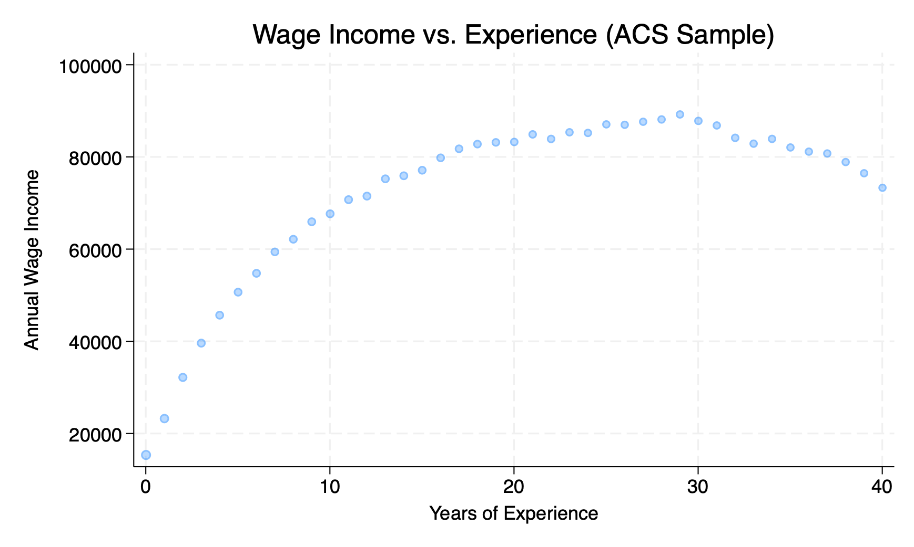
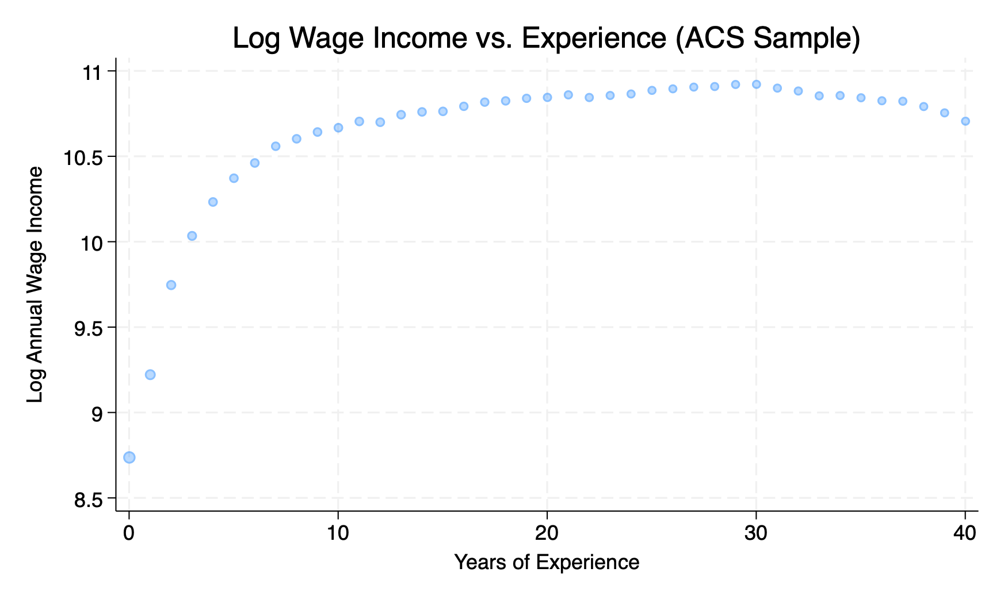
In both of these figures, we see rapid earnings growth at the beginning of a person’s career, which eventually slows down. This type of relationship is consistent with Mincer’s equation.
Now the key parameter we are actually interested in is the return to schooling, \(\beta_1\). This parameter tells us how much an additional year of schooling increases a person’s earnings. So let’s next turn to this parameter. Again in the ACS we can study how earnings depend on the number of years of schooling.
As in the experience figures, the size of the dots is proportional to the number of individuals in the sample with that level of schooling. In the U.S. there are compulsory schooling laws that mandate children stay in school until a certain age, which can vary across state from a minimum of 16 to a maximum of 18. This may be one reason that we have very few individuals with low levels of schooling. Until we hit 12 years of schooling, we have very few observations.
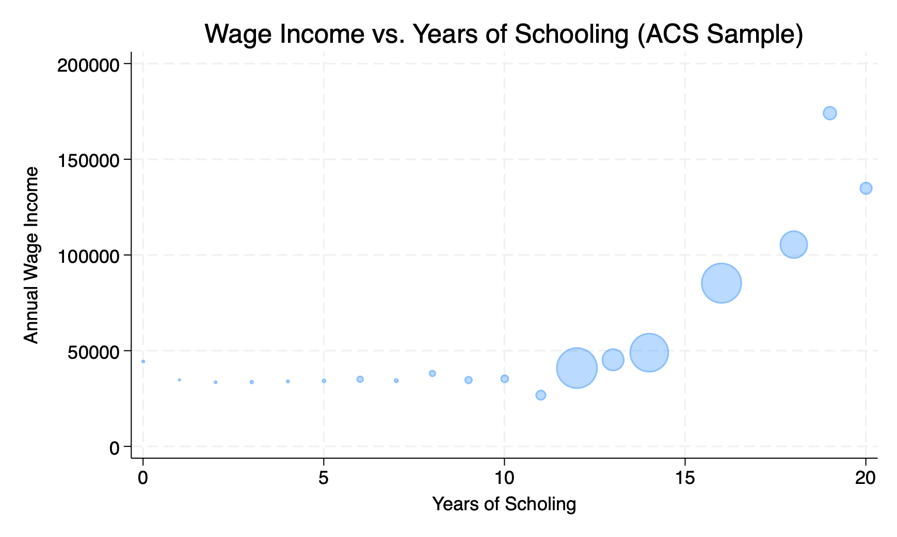
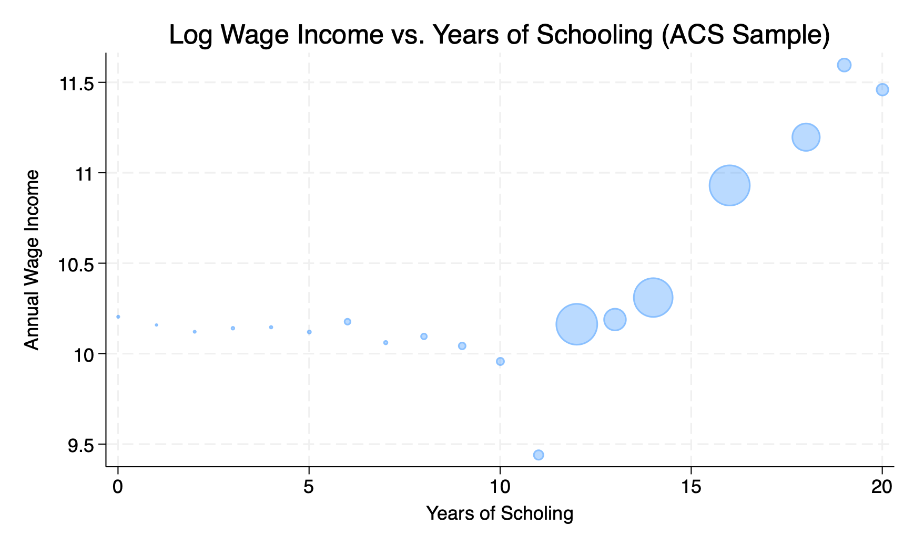
If we consider the part of the figure where we have ample data (12 or more years of schooling), we can see a stark increase in earnings for each additional year of school.
Now let’s get to an estimate of the Mincer Equation. Generally, this equation would be estimated by Ordinary Least Squares (OLS). This chooses the coefficients \(\beta_1\), \(\beta_2\) and \(\beta_3\) that best fit the data. A key focus of your econometrics courses will be to understand what the statistical definition of “best-fit” means. In our case, we are going to take estimates and try to understand how to interpret them.
A typical estimated Mincer equation might look like:
\[\ln(w) = 7.069 + 0.173 \cdot S + 0.100 \cdot E - 0.002 \cdot E^2 + \varepsilon\]
These are the numbers that I retrieved when estimating the parameters using the 2023 ACS sample restricted to individuals with non-missing income between the ages 18-65.
What this equation is trying to tell us is how to predict an individual’s log wage from their schooling in years and overall experience. For example, imagine a person graduated college (\(S=16\)) and has spent ten years in the workforce (\(E=10\)). Their predicted log wage is equal to:
\[\ln(w) = 7.069 + 0.173 \times 16 + 0.100 \times 10 - 0.002 \times 10^2\]
\[\ln(w) = 7.069 + 2.768 + 1.000 - 0.200 = 10.637\]
Now imagine we consider another person who has the same experience, but has 17 years of schooling (i.e. they went to graduate school for one year). Their predicted log wage is equal to:
\[\ln(w) = 7.069 + 0.173 \times 17 + 0.100 \times 10 - 0.002 \times 10^2\]
\[\ln(w) = 7.069 + 2.941 + 1.000 - 0.200 = 10.810\]
What is the difference in log wages between these two individuals? \[\Delta \ln(w) = 10.810 - 10.637 = 0.173\]
So the coefficient on schooling, \(\beta_1 = 0.173\), tells us that an additional year of schooling is associated with a 0.173 increase in log wages. But what does this mean in terms of actual wages? Well, there is a simple formula that allows us to convert changes in log wages to percent changes in wages. The formula is: \[\% \Delta w \approx 100 \times exp(\beta_1)-1\]
For this course, you don’t need to memorize this formula or understand how it is derived. The point of this exercise is to understand how to interpret the coefficient on schooling. Since you are probably less familiar with log wages, we want to convert this into a more interpretable number: percent changes in wages.
Using the formula above, we can compute the percent change in wages from an additional year of schooling as: \[\% \Delta w \approx 100 \times exp(0.173)-1 \approx 18.9\%\]
So the interpretation of the coefficient on schooling is that an additional year of schooling is associated with an 18.9 percent increase in wages.
Now, so far what we have done is show that there is a strong correlation between wages and schooling. But we have not yet established that there is a causal impact of schooling on wages. There are many reasons why people with more schooling may earn more. For example, people who attend college may come from wealthier families and have better connections that help them get higher paying jobs. Or, people who attend college may be more motivated which could help later in finding jobs and being promoted.
Establishing the causal impact of education on earnings is a central question in labor economics. There have been many different strategies attempted to answer this question. We will discuss briefly here some of the more prominent strategies used in the literature, but only briefly. Instead our focus in this chapter will be on other aspects of human capital choice, which includes how individuals predict their own returns to education, and how returns vary by the type of education, such as college major or college quality.
6.3 Identification Strategies
There have been many different strategies used in the literature to try and estimate the causal impact of education on earnings. Below we briefly describe some of the more prominent strategies.
Twin studies are a staple of many academic literatures. The idea is that twins share many of the same background characteristics. They come from the same family, have similar genetics (or the same genetics in the case of identical twins), grow up in the same environment. Therefore, if they get different levels of education, maybe we can attribute differences in their earnings to the differences in education. Ashenfelter and Rouse (1998) use this strategy on a sample of identical twins. They take advantage of a large twin festival held in Twinsburg each year in order to get a large sample of 700 identical twins. They find in their twin sample that the return to an additional year of schooling is around 9 percent. So that is quite a bit lower than our estimate using the 2023 ACS data. But it goes in line with our intuition. Individuals that attend more schooling may be different in unobservable ways that also help them earn more. By looking at twins, we can control for some of these unobservable differences.
In the U.S., places often use cutoffs for determining when a child will start school. For a long time this was December 31st. For example, take a child is turning 6 on December 31st. This child would be assigned to start the first grade in the following year. However, take another child that was born on January 1st. This child would not be assigned to start first grade until the year after that. Therefore, even though these two children are only one day apart in age, they will start school a full year apart.
Now, Angrist and Krueger (1991) realized that this might interact with the compulsory schooling laws in the U.S. In most states, children are required to stay in school until they turn 16. Therefore, if you are born on December 31st, you would be required to stay in school for a full year longer than a child born on January 1st. The reason is simply because you started school a year earlier.
To put concrete numbers into this idea, imagine a child born on December 1st. This child would start first grade at age 6 on the following September. Therefore, this child would turn 16 they would have experienced about 9 1/2 years of schooling. Now, for the child born on January 1st. This child would start first grade at age 7 on the following September. Therefore, this child would turn 16 they would have experienced about 8 1/2 years of schooling.
So there are a few things to keep in mind with this design. First, this is really only relevant for individuals who are planning to drop out as soon as possible. If you are planning to go to college, then this design won’t impact you. It doesn’t matter if you start school early vs. late, as you plan to continue your education anyways. However, for individuals at the margin of dropping out, this design can have a big impact. Angrist and Krueger (1991) finds that spending an additional year in school due to compulsory schooling laws increases earnings about 7.5 percent. So pretty close to our estimate from the twin study.
These are two clever designs that have been used in the literature to try and estimate the causal impact of education on earnings. There are many more designs that have been used as well. In general much of the literature finds relatively similar estimates of the return to an additional year of schooling, generally in the range of 7-10 percent.
6.4 Regression Discontinuity Design
So far we have considered the return to an additional year of schooling. But surely the impact of a college education, for example, may vary by the major. Maybe different types of colleges have very different returns. In this section we will first introduce a new research design that has proven to be extremely useful in the economics of education: the regression discontinuity design. Then we will use this design to study various questions in understanding how different education choices impact earnings.
To understand the idea behind a regression discontinuity design, we are going to go through the first use of the design, which comes from Thistlethwaite and Campbell (1960). In their paper, they were interested in studying the effect of receiving a scholarship on various student outcomes, such as whether the individual goes on to purse graduate school or whether the individual goes on to win more scholarships. So this is a slightly different question than we have been considering so far, but it sets us up well to understand the methodological approach. At the college they were studying, a subset of students were given merit-based scholarships based on their results on a standardized test. If a student scored above a certain cutoff, they would receive the scholarship. If they scored below the cutoff, they would not receive the scholarship.
Now let’s again consider how one might tackle this problem: if we had data on individual students, maybe we could compare the outcomes for students that received the scholarship vs. those that did not. But again, we run into a problem we have already seen: students that received the scholarship are likely different than students that did not receive the scholarship in unobservable ways. For example, maybe students that received the scholarship are more motivated. Due to this inherent motivation, they will be more likely to go on to graduate school or win more scholarships. Therefore, simply comparing the two groups will not give us a causal estimate of the impact of receiving the scholarship.
The idea in Thistlethwaite and Campbell (1960) is relatively simple. Because they had information on the score the students received on the standardized test, they could compare students that scored just above the cutoff to students that scored just below the cutoff. The idea is that students that scored just above vs. just below the cutoff are likely very similar. They likely have similar levels of motivation, similar family backgrounds, and similar innate abilities. Small differences in a test score are likely due to random chance. Maybe someone guess correct a few more times than another student and got a scholarship. Therefore, if we compare students that scored just above vs. just below the cutoff, we can get a causal estimate of the impact of receiving the scholarship.
This idea, regression discontinuity design, did not catch on for quite a while. However, recently, more and more researchers have been taking advantage of this relatively simple idea. The plot below shows the number of papers in top economics journals that use a regression discontinuity design. As you can see, there was very little interest in this design until around 2000, after which there has been an explosion of research using this design.
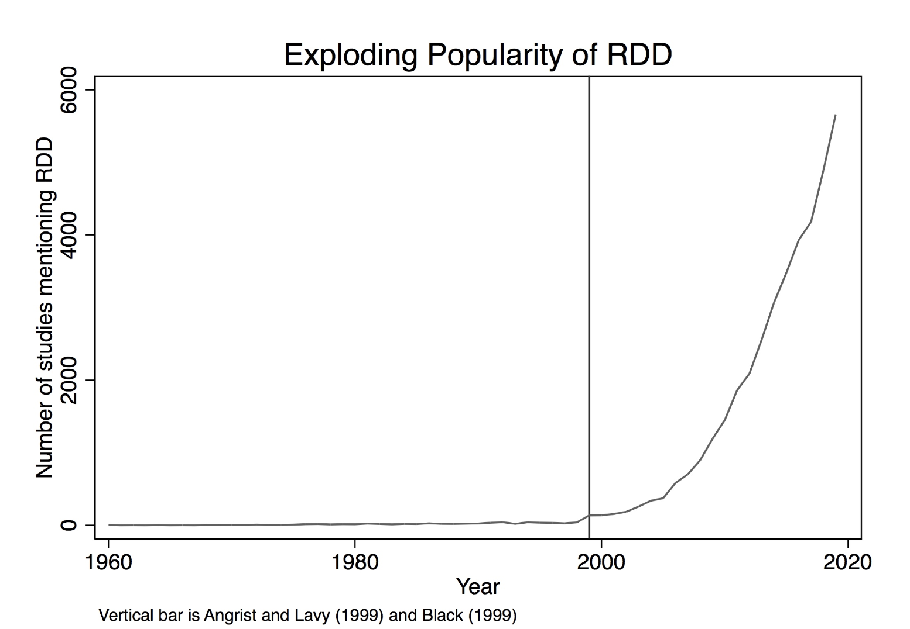
Now the regression discontinuity design has become influential for a variety of reasons. First, the basic requires that some treatment of interest is determined by a cutoff rule. This ends up being a relatively common in various policy settings. For example, elections also have cutoff rules. Imagine you are interested in the effect of having a Democratic vs. Republican mayor on city outcomes. You could compare cities that just barely elected a Democratic mayor vs. cities that just barely elected a Republican mayor. The idea is that these cities are likely very similar, and the difference in election outcomes is likely due to random chance (i.e. a few more people showing up to vote). Therefore, you can use this design to estimate the causal impact of having a Democratic vs. Republican mayor.
It was also later clarified that you don’t need to have a strict cutoff rule. As long as the probability of receiving treatment jumps at a certain cutoff, you can still use this design. This is called a fuzzy regression discontinuity design. For example, imagine a scholarship program that gives scholarships to students that score above a certain cutoff on a test, but also gives scholarships to some students that score below the cutoff (maybe due to financial need). In this case, you can still use the regression discontinuity design as long as the probability of receiving the scholarship jumps at the cutoff. This is something you can easily check in the data, so is easily verifiable.
To see the power of regression discontinuity designs, we are going to go through two recent papers that have used this idea. The first is similar to the original Thistlethwaite and Campbell paper. Instead of a financial scholarship at a single college, we are going to consider merit-based scholarships in Colombia. As we will see these scholarships have a big impact on college attendance and college completion, so we can use the regression discontinuity design to estimate the impact of college attendance on earnings. The second example we will consider is how different college majors impact earnings. In particular, we will study the causal impact of earning an economics degree.
Our first study comes from Londoño-Vélez, Rodrı́guez, and Sánchez (2020). While most of our discussion has focused on the U.S., the setting for this paper is the higher education system in Colombia. In Colombia, there is a large merit-based scholarship program called “Ser Pilo Paga” (Hard Work Pays Off). This program was started in 2014 and provided full scholarships to high-achieving students from low-income backgrounds to attend top universities in Colombia. The goal of the program was to increase access to higher education for talented students who might not otherwise be able to afford it. The scholarships covered full tuition to students who attend a four or five-year degree program at any university with High Quality Accreditation. Therefore, it was a very generous scholarship program, although restricted only to a certain subset of universities.
The key feature of this program that allowed to use a regression discontinuity design is that scholarships were awarded based on a standardized test score. In Colombia, when students exit high school, they take a national standardized test called the “SABER 11” exam. This is similar to the SAT or ACT exams in the U.S., but more widely used. The test is taken even by students that don’t plan to attend college. In order to be eligible for the Ser Pilo Paga scholarship, students needed to score above a certain cutoff on the SABER 11 exam.
The plot below shows the probability of receiving the scholarship based on the SABER 11 exam score. As you can see, there is a big jump in the probability of receiving the scholarship at the cutoff. However, you might also notice that it is not a perfect jump from 0 percent to 100 percent. Instead, it jumps from 0 to about 60 percent (0.6 in the graph). The reason is because passing the cutoff implies you are eligible for the scholarship, not that you are required to take it. Some of these individuals may choose not to attend college. If they do attend college, they may not be attending a High Quality Accredited university for which the scholarship is valid. This is therefore an example of a fuzzy regression discontinuity design. The treatment here is receiving a scholarship. Because it does not jump from 0 to 1, we have a fuzzy design.
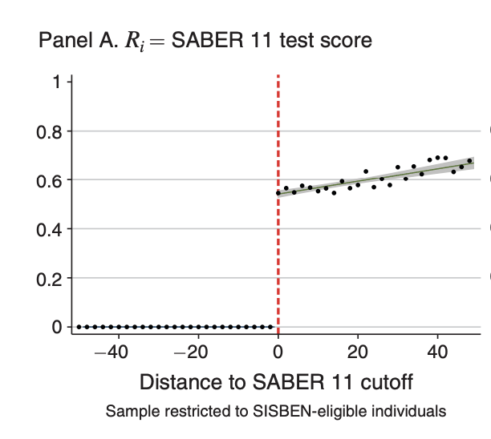
Now, the key assumption of a regression discontinuity design is that individuals just above vs. just below the cutoff are similar. This is true if students cannot precisely manipulate their test scores. The definition of precisely manipulate has a statistical definition. However, the intuition is the following: imagine a subset of students were given access to the electronic records where their SABER 11 test score was held.
If they wanted the scholarship, they could change their score to be just above the cutoff. Therefore, for all these students that are given the ability to cheat, they can precisely manipulate where their score will fall relative to the cutoff.
Now, how will this manifest in the data? If we look at the distribution of test scores, then we would see an unusual spike in test scores right at the cutoff. This is because the students who could cheat would all change their scores to be just above the cutoff so there would be “more than expected” students just above the cutoff.
Well, this sounds like a pretty convoluted story, right? And that suggests that being able to precisely manipulate test scores is unlikely. Studying long hours, working hard, these are ways to improve your score, but not precisely manipulate it. But the great thing about the regression discontinuity design is that we can check for this in the data.
The plot below shows the distribution of SABER 11 test scores. The vertical dashed line indicates the cutoff for receiving the scholarship. As you can see, there is no unusual spike in test scores right at the cutoff. This implies that students are not able to precisely manipulate their test scores. This is a valid regression discontinuity design.
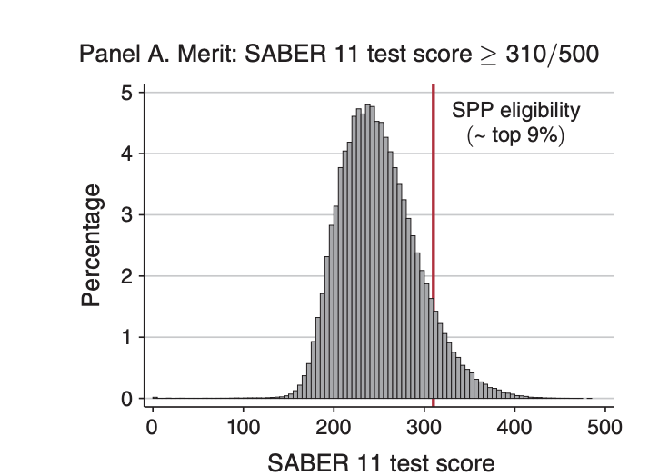
Now let’s get to some results. What is the impact of receiving financial assistance on college attendance and future earnings. In the plot below, we see the impact of receiving the scholarship on college attendance. The vertical dashed line indicates the cutoff for receiving the scholarship. As you can see, there is a big jump in college attendance at the cutoff. Receiving the scholarship increases college attendance by about 40 percentage points. This is a huge impact! These students at the cutoff are very high achieving students, in the top decile of test scores. Yet, receiving the scholarship increases their college attendance by 32 percentage points. This shows that in this setting the financial constraints play an enormous role in determining college attendance.
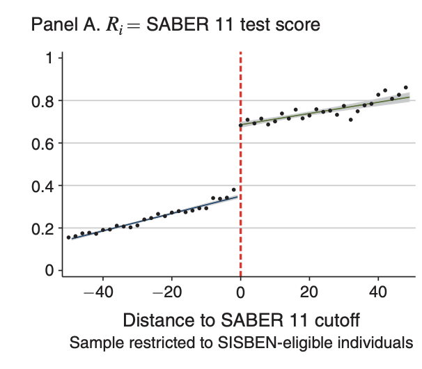
In a follow-up study, Londoño-Vélez et al. (2025) study the impact of the financial aid on future earnings. The literature on financial aid often considers two potential impacts. First, if financial aid is given to students that would have attended college anyways then the impact on future earnings may be small. This is not to discount the importance of financial aid for equity reasons, but if the goal is to increase future earnings, then giving aid to students that would have attended college anyways may not be the most effective way to do this. From what we’ve seen above, this seems unlikely to be the case here, but we can also directly study the impact of being eligible for the scholarship on future earnings. This is one of the goals of Londoño-Vélez et al. (2025).
Below, we show the plot of the impact of receiving the scholarship on future earnings. The vertical dashed line indicates the cutoff for receiving the scholarship. As you can see, there is a big jump in earnings at the cutoff. The y-axis is denoted in multiples of the monthly minimum wage in Colombia. If you receive zero formal earnings, you would be coded as having zero multiples of the minimum wage, so this is why averages can be well below one.
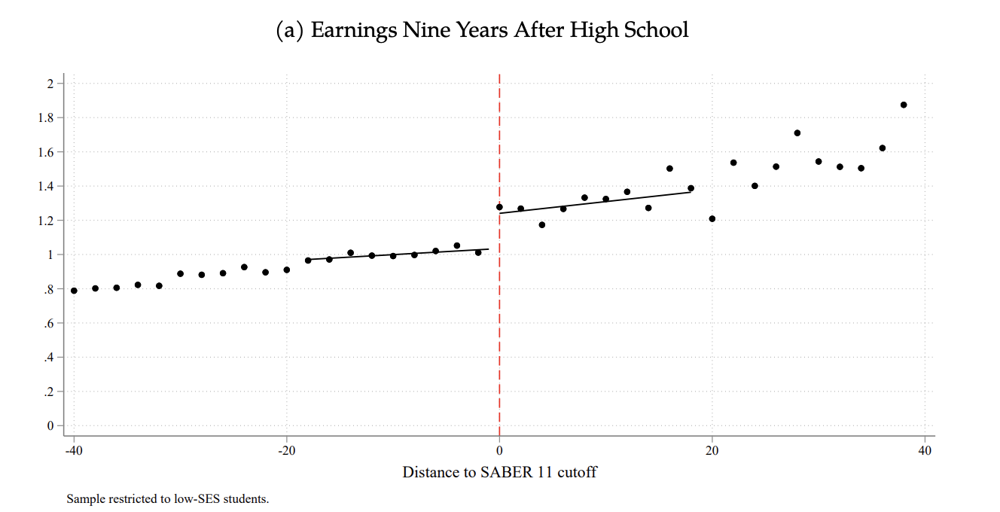
As you can see in Figure 6.11, individuals just below the cutoff earning about 1.0 times the monthly minimum wage, while individuals just above the cutoff earn about 1.2 times the monthly minimum wage. Therefore, one way to interpret this is that being eligible for the scholarship increases monthly earnings by 0.2 times the monthly minimum wage. Now, recall that not everyone even takes up the scholarship or attends college due to being eligible. So this isn’t exactly the impact of attending college on earnings. To scale this up to get the impact of attending college on earnings, we need to divide this estimate by the increase in college attendance at the cutoff. In this context, we would then get an increase of about 0.35 times the monthly minimum wage. Since the average earnings for individuals just below the cutoff was about 1 monthly minimum wage, this represents a 35 percent increase in earnings from attending college.
Next, we are going to turn to our second example which brings us back to the U.S. and even within the UC system. In many universities, there are certain majors that have requirements to get into the major. At UC Santa Cruz, in order to get into any of the Economics majors, you must receive a combined GPA of 2.8 in the prerequisite courses (Econ 1 and Econ 2). Therefore, again, whether you receive an Economics degree depends partially on a cutoff rule. Therefore, we can use regression discontinuity design to estimate the causal impact of receiving an Economics degree on future earnings.
This is exactly what Bleemer and Mehta (2022) does. As always, the first thing to check in a regression discontinuity design is does the threshold rule have an effect. The plot below shows the probability of receiving an Economics degree based on the combined GPA in Econ 1 and Econ 2. The vertical dashed line indicates the cutoff GPA of 2.8. As you can see, there is a big jump in the probability of receiving an Economics degree at the cutoff.
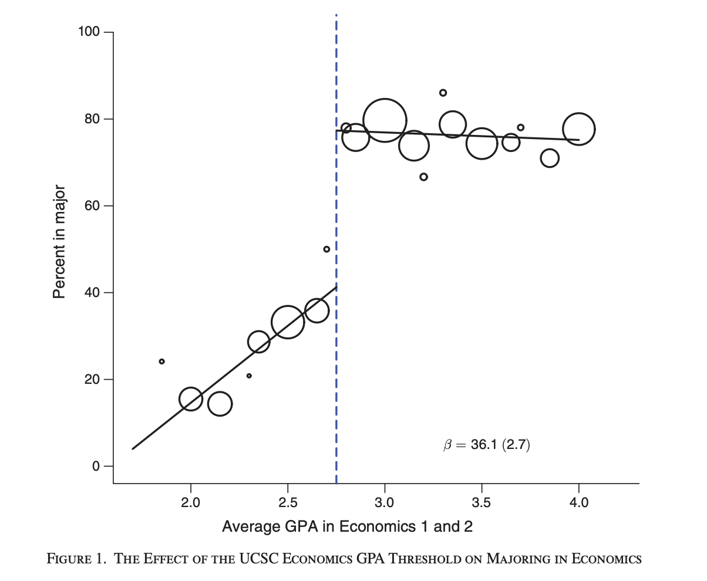
This is again a fuzzy regression discontinuity design. Why, because not everyone that passes the cutoff will receive an Economics degree, and some of the individuals that do not pass the cutoff may still receive an Economics degree. Individuals to the left of the cutoff can petition to be admitted into the major, and some of them are successful. Additionally, some individuals that pass the cutoff may decide to switch to a different major later on. Therefore, we have a fuzzy design. Regardless, we can see that the threshold is influential on whether an individual receives an Economics degree. If you fall just below, your probability of receiving an Economics degree is about 40 percent. If you fall just above, your probability of receiving an Economics degree is about 80 percent. Therefore, passing the cutoff increases your probability of receiving an Economics degree by about 40 percentage points.
Now, again, what is the key assumption of a regression discontinuity design? That individuals just above vs. just below the cutoff are similar. This will be true as long as individuals cannot precisely manipulate their GPA in these courses. While we can check for this in the data, it is a bit harder than for our prior example with SABER 11. This is because SABER 11 takes on many many values. We get a clear continuous distribution of test scores. However, GPA only takes on a few discrete values. Looking for spikes in a distribution with only a few discrete values is a bit harder.
Therefore, another way to check for this is to look at other characteristics of individuals just above vs. just below the cutoff. Our real goal is to argue that individuals just below vs. just above the cutoff are similar in all characteristics except for receiving an Economics degree. In Bleemer and Mehta (2022), the authors have a rich set of characteristics to study. For example, one compelling characteristic is the SAT score of individuals. If individuals just above vs. just below the cutoff have similar SAT scores, that is evidence that they are similar in terms of overall academic ability.
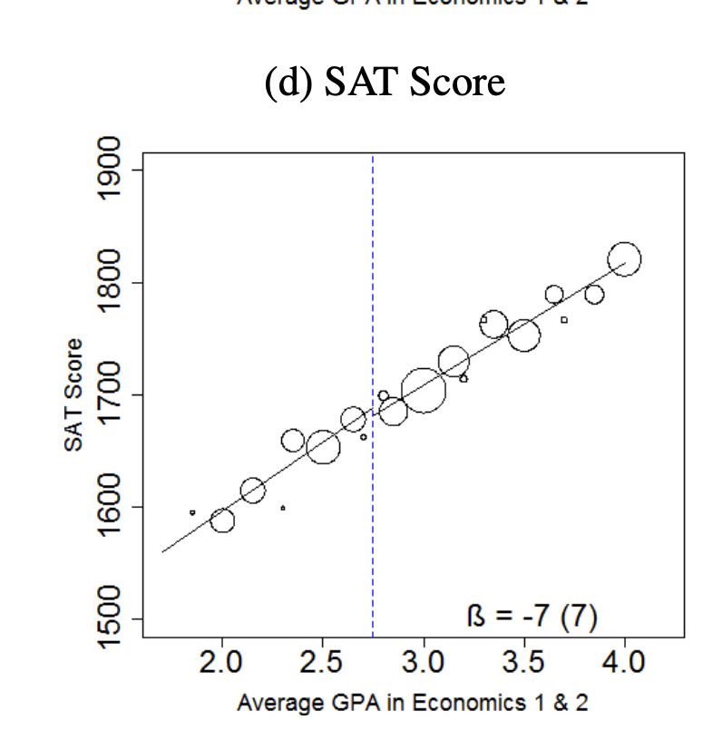
As can be seen in the graph, there is no clear break around the cutoff. It is true that individuals that had higher SAT scores tend to have higher GPAs in Econ 1 and Econ 2. But there is no unusual jump in SAT scores at the cutoff. This suggests that individuals just above vs. just below the cutoff are similar in terms of academic ability, at least measured by the SAT. The authors check many other characteristics as well and find similar results. Therefore, we can be more confident that this is a valid regression discontinuity design.
So let’s get to the results. Below we plot earnings by GPA in Econ 1 and Econ 2. The vertical dashed line indicates the cutoff GPA of 2.8. These earnings are for the years 2017 and 2018, which implies that the students in the sample are between 23 and 28 years old. Therefore, this should be interpreted as an estimate of the change in earnings early in a person’s career.
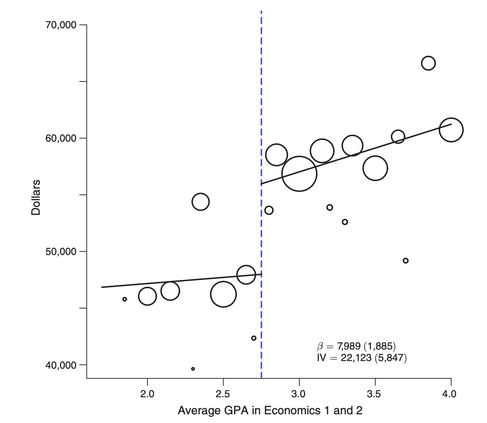
Individuals just below the cutoff earn about $47,000 per year, while individuals just above the cutoff earn about $55,000 per year. Therefore, being eligible for an Economics degree increases earnings by about $8,000. Again, recall that not everyone that passes the cutoff will receive an Economics degree, and some of the individuals that do not pass the cutoff may still receive an Economics degree. Therefore, if we scale this impact by the increase in probability of receiving an Economics degree at the cutoff (40 percentage points), we get that receiving an Economics degree increases earnings by about $20,000 per year. This is what the term IV is referring to in the figure (although we have just approximated the numbers, the exact effect of a Economics degree is $22,123).
Now, this is an enormous effect. Remember, we have been consider the impact of an additional year of schooling on earnings. Typical estimates are in the range of 7-10 percent. Here, receiving an Economics degree relative to another college decrease increases earnings early in your career by over 40 percent!
And the amazing thing that the regression discontinuity design allows us to do is argue that this is causal. However, one nice feature of this study is that the authors also consider what the observational data would suggest. For an observational study, one could take all the students at UC Santa Cruz and compute earnings by major. Then to estimate the return to an Economics degree, one could compare the average earnings of Economics majors to the average earnings of non-Economics majors. Or to perhaps be more realistic, you could compare Economics majors to other popular social science majors, such as Psychology or Sociology.
When the authors do this, they estimate that Economics majors earn about $20,000 more than other social science majors. This is remarkably close to the causal estimate of $22,123 they get from the regression discontinuity design. Now, to emphasize, just because the observational estimate is close to the causal estimate in this particular case does not mean that we didn’t need the regression discontinuity design. If you had just shown someone the observational estimate, there would be a number of counterarguments. Maybe Economics majors tend to have higher GPAs and would earn more anyways. Maybe Economics majors are interested in different careers, but even if they were unable to get an Economics degree, they would have still pursued those careers. These arguments are all valid for observational studies. The power of the regression discontinuity design is that it allows us to get around these concerns and estimate a causal impact. So in this context, there is a clear causal impacto of receiving an Economics degree on earnings.